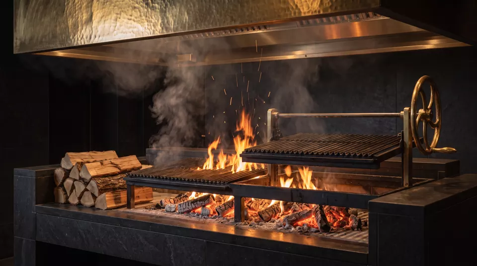
I
The wood grill
A long iron grill over oak embers, raised and lowered by hand to hold the exact heat each cut needs.
Downtown Beirut · Lebanon
Paired with whiskey.
An intimate fire-led dining experience. Exceptional ingredients, live cooking, and whiskey selected to complete every course.
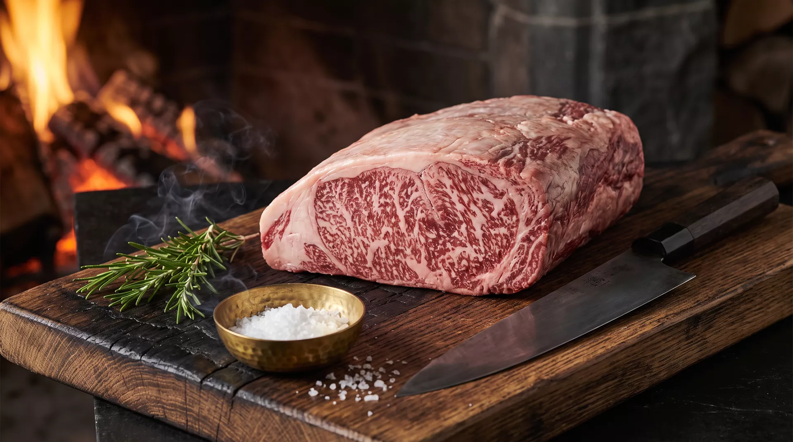
01 The Philosophy
Before salt, before spice, there is the fire. Every plate at ÂTRE begins on oak, olive and vine wood, burned down to the embers that cook it.
We cook the way the fire asks us to. Close and fast where a crust is wanted. Low and patient where a cut needs time. Smoke is never added later. It comes from the wood, and it stays in the food.

A long iron grill over oak embers, raised and lowered by hand to hold the exact heat each cut needs.
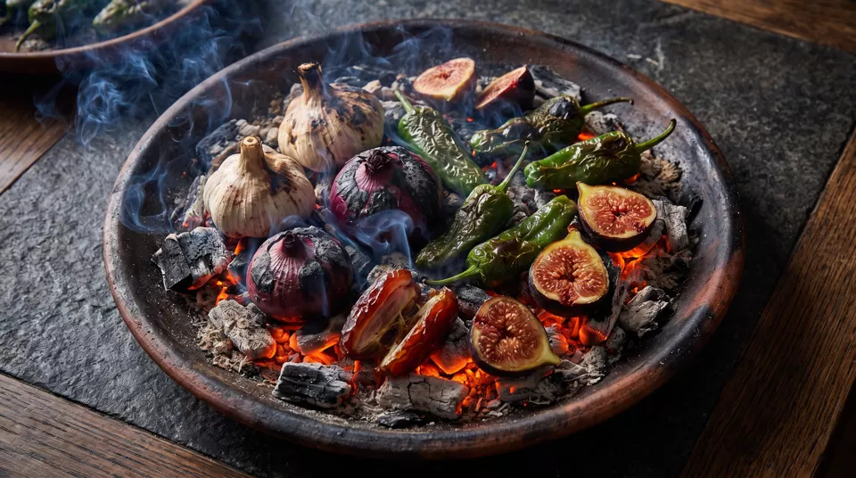
Vegetables, garlic and fruit roasted directly in the coals, where they blister, soften and sweeten.
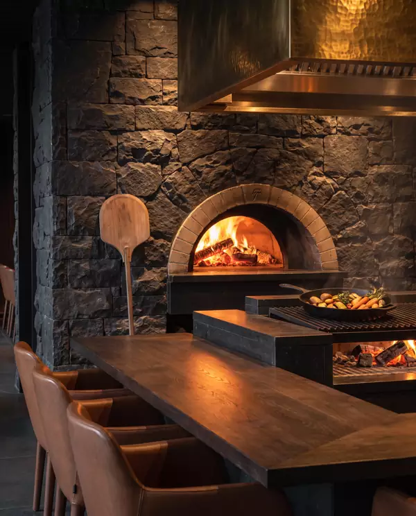
A domed oven in the stone wall for breads, bones and slow roasting.
Eight to ten seats facing the fire. The closest view in the house.
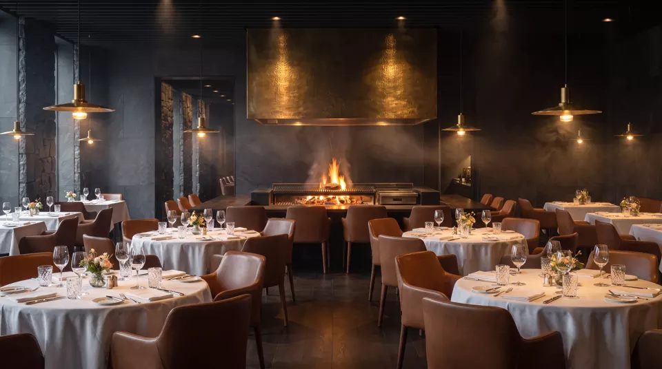
Every table is set with a view of the hearth, so the fire is part of the evening.
I
Fire
It starts with oak, burned down to embers.
II
Craft
Then the chef's hands, the heat, and the moment it is ready.
III
The Pour
And finally, the whiskey chosen to meet it.
Every great dish deserves the right pour.
Explore the menu05 The Whiskey Library
Behind glass, the library holds the styles our menu is built around. Ask, and we will pour the one your dish was cooked for.
Clean, floral, precise.
Meets A5 Japanese Wagyu
Vanilla, caramel, toasted oak.
Meets Tomahawk · Short Rib
Pepper, spice, a dry finish.
Meets Rack of Lamb
Peat smoke, sea salt, iodine.
Meets Wild Sea Bass · Lobster
Orchard fruit, honey, soft malt.
Meets Iberico Pork Presa
Dried fig, raisin, warm spice.
Meets Duck Breast
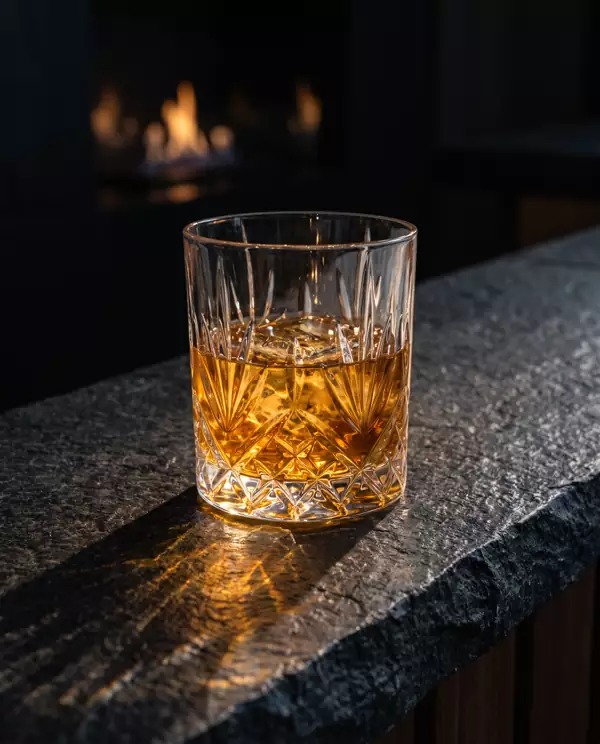
Our selection changes with what we can source. Ask your server for tonight's pours.
06 Tableside
The tomahawk for two is carved at your table, along the bone.
Figs and dates caramelised in a copper pan, finished in flame.
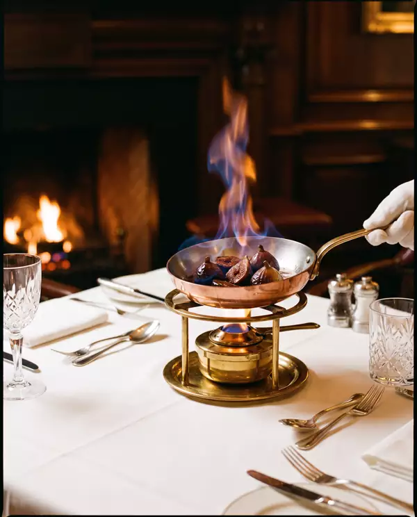
Some dishes arrive under a glass cloche of oak smoke, lifted in front of you.
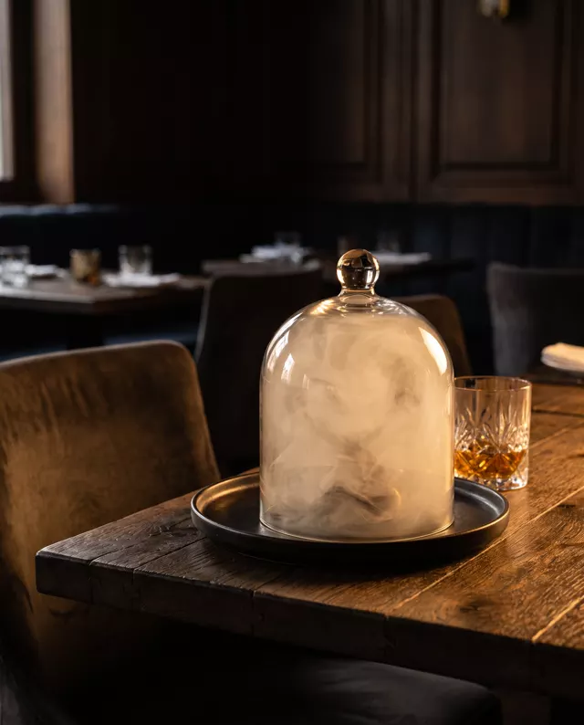
Butter, salt and a final moment over the coals, just before it leaves the fire.
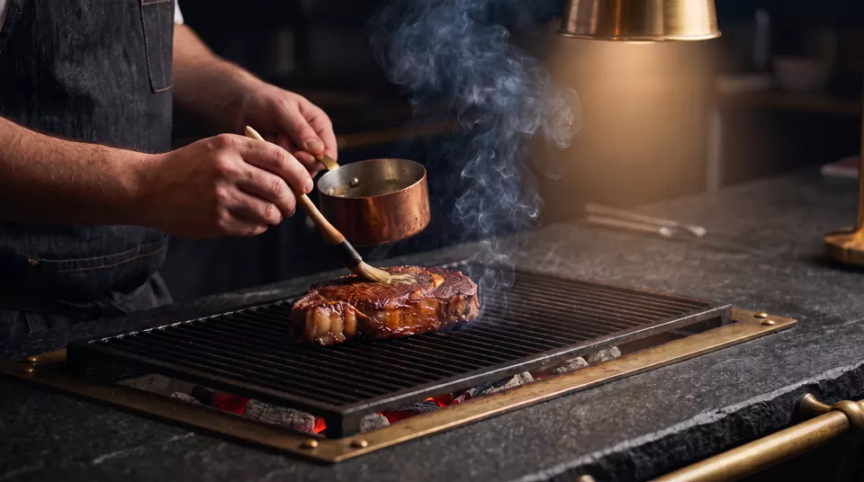
Or take a seat at the counter and watch every course travel from fire to plate.
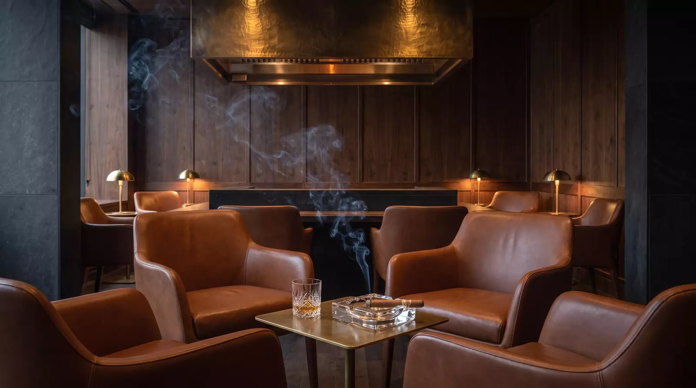
07 The Private Cigar Lounge
After dinner, the evening moves to the lounge. Cognac leather, dark wood, warm light, and a walk-in humidor.
The lounge is for guests aged 18 and over. Cigars are offered separately and are not included in dining reservations.
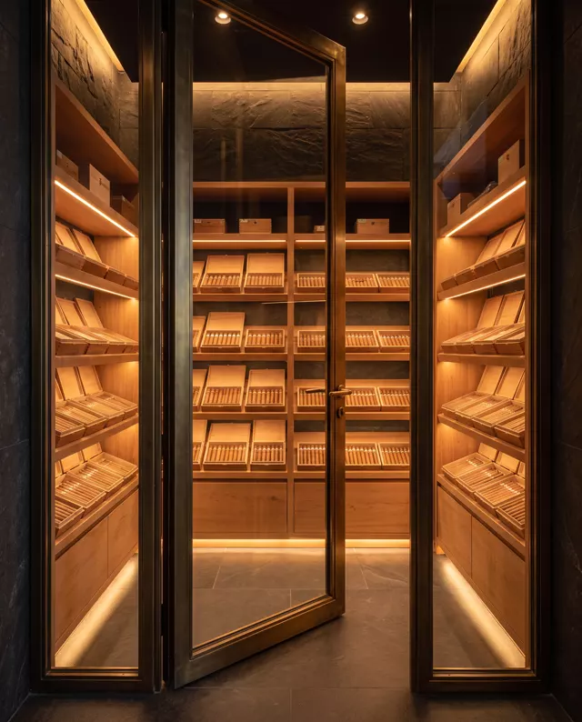
08 The Interior
One room built around one flame. Materials chosen to hold warmth and catch the light.
09 Reservations
Send a reservation request and our team will reply to confirm your table.
ÂTRE welcomes guests aged 18 and over.
Map arrives once the address is confirmed.
10 Find Us
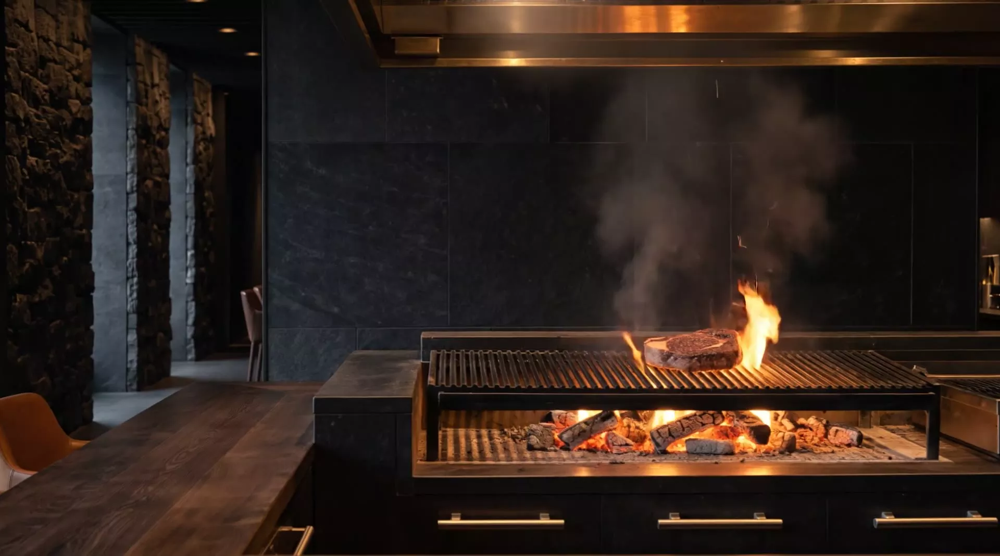